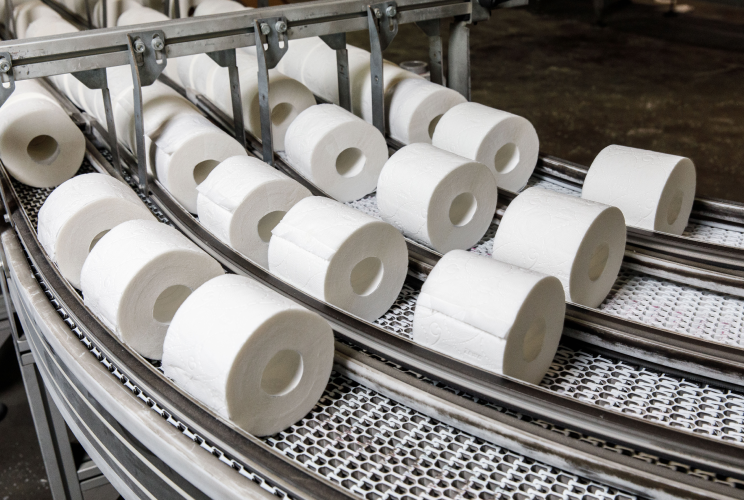
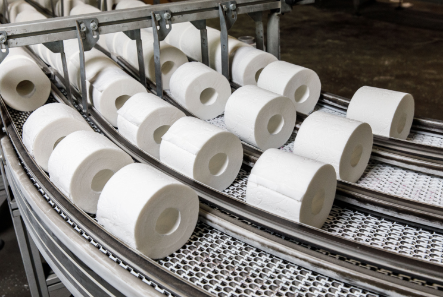
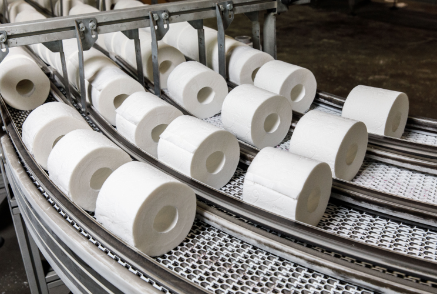

Фотогалерея


 

Сегодня на фабрике производится гигиеническая продукция брендов TENA, Libresse и Zewa. Строительство фабрики началось в конце 2008 года. Открытие состоялось в сентябре 2010 года. При выборе места строительства учитывалась близость к основным рынкам сбыта, а также наличие развитой инфраструктуры и квалифицированных трудовых ресурсов. Все эти факторы очень удачно сочетаются именно в Тульской области.
Инвестиции в строительство зданий и сооружений первой очереди производства оцениваются в 85 млн. евро. Фабрика располагает собственной современной лабораторией. В марте 2012 года лаборатория прошла сертификацию на соответствие требованиям российского законодательства. В феврале 2015 года успешно пройдена переаттестация.
Работа в Essity – это не только возможность построить карьеру, а также шанс повысить благополучие и качество жизни людей по всему миру. На фабриках установлено современное оборудование, отвечающее всем стандартам безопасности и качества на текущий момент.
На фабрике действуют программы стажировок для молодых специалистов, налажено взаимодействие с крупными университетами России, проводится регулярное повышение квалификации и обучение.
Ключевыми приоритетами в области экологии являются следующие: сокращение выбросов углекислого газа в производстве от использования природного топлива и электричества и отопления, контроль источников сырья, сокращение использования воды, обеспечение высокого качества очистки сточных вод.
Все первичное древесное сырье сертифицировано в соответствии со стандартами FSC® или PEFC либо соответствует стандарту контролируемой древесины FSC Вся используемая в производстве целлюлоза отбелена без элементарного хлора (ECF – Elementary Chlorine Free). Использование такой целлюлозы снижает воздействие на окружающую среду
